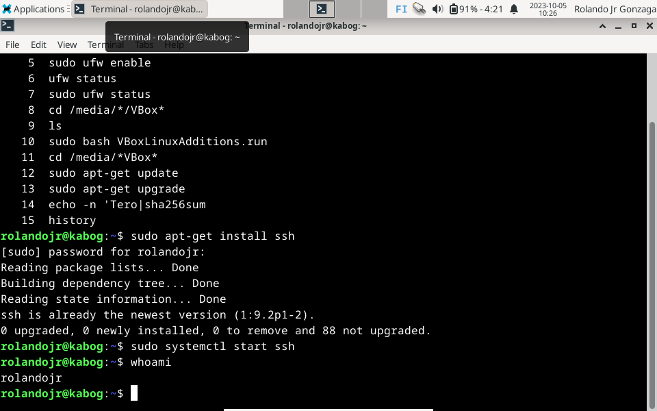

Steps in SSH Server Installation
Install the OpenSSH server package. sudo apt-get install ssh

Start the OpenSSH server (sudo systemctl start ssh).Print the current user's username (whoami). Then connect to own host (ssh whoami@localhost). Exit
create a new user account. sudo adduser matti

Generate SSH key pairs (ssh-keygen). Then copy (ssh-copy-id whoami@localhost)